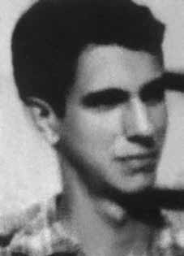

Cilon
Cunha
Brum
CIRCUNSTÂNCIAS DA MORTE
Conforme o livro “Dossiê Ditadura”, em documento organizado pela ABIN, de 2005, consta que o nome de Cilon da Cunha Brum estava presente em uma lista de procurados do Destacamento de Operações e Informações do Centro de Operações de Defesa Interna do II Exército (DOI-CODI/IIEx) desde setembro de 1972.
Em memorial feito pelos familiares e presente no processo da Comissão Especial sobre Mortos e Desaparecidos, infere-se haver fortes indícios de que ele foi morto em dezembro de 1973, em episódio conhecido como “Chafurdo de Natal”. Porém, os fatos referidos no “Relatório Arroyo” afirmam que Cilon estava vivo em 30 de dezembro de 1973. Da mesma forma, o livro “Dossiê Ditadura” relata o depoimento prestado ao Ministério Público Federal em 2001, por Pedro Ribeiro Alves (Pedro Galego), ex-guia do Exército, no qual ele afirma ter visto vivos Batista, Áurea, Simão (Cilon) e Josias, no acampamento do Exército, em Xambioá (TO).
O relato de Pedro Galego indica que Cilon não morreu no dia 25 de dezembro de 1973 e que estava sob custódia do Exército Brasileiro antes de seu desaparecimento. Ainda de acordo com o Dossiê Ditadura, artigo publicado no Jornal No Mínimo em 20 de janeiro de 2005, assinado por Vasconcelos Quadros, afirma que Cilon teria sido visto por “Jonas”, que sobreviveu à prisão, na Base de Xambioá (TO): “conta ter convivido na base militar de Xambioá com outros dois guerrilheiros que estão desaparecidos. Um deles foi Cilon da Cunha Brum, conhecido por ‘Comprido’ ou ‘Simão’, natural de São Sepé, no Rio Grande do Sul, ex-estudante de economia da Pontifícia Universidade Católica de São Paulo, preso e desaparecido desde o Natal de 1973.”
No Relatório da Marinha, entregue ao ministro da Justiça em 1993, a versão estabelecida é de que Cilon foi morto em 27 de fevereiro de 1974 por seus companheiros, em uma ação de ‘justiçamento’. No Relatório do Centro de Informações do Exército, de 1975, a mesma data de morte é confirmada, sem menção às circunstâncias nas quais teria se dado o evento (Arquivo Nacional, SNI: BR_DFANBSB_V8_AC_ACE_54730_86_002 p. 34).
Já nas informações do “Arquivo Curió”, contidas no livro “Documentos do SNI: Os mortos e Desaparecidos na Guerrilha do Araguaia”, consta que Cilon foi preso e executado em janeiro de 1974. Em requerimento de 1990, após recorrentes pedidos de informações sobre seu desaparecimento ao Estado, a família de Cilon Cunha Brum solicitou que o Ministério da Justiça investigasse as informações que tiveram contato, de que os restos mortais de Cilon estariam entre as ossadas encontradas no cemitério Dom Bosco, de Perus, São Paulo. Em resposta, o Ministério da Justiça disse ter solicitado que o Departamento de Polícia Federal apurasse o caso. Porém, não houve resposta definitiva sobre a localização dos restos mortais de Cilon.
According to the book “Dossiê Ditadura”, in a document organized by ABIN, from 2005, it appears that the name of Cilon da Cunha Brum was present on a wanted list of the Operations and Information Detachment of the Internal Defense Operations Center of the II Army (DOI-CODI/IIEx) since September 1972.
In a memorial made by his family and present in the process of the Special Commission on the Dead and Missing, there is strong evidence that he was killed in December 1973, in an episode known as “Christmas Wallowing”. However, the facts referred to in the “Arroyo Report” state that Cilon was alive on December 30, 1973. Likewise, the book “Dossiê Ditadura” reports the testimony given to the Federal Public Ministry in 2001, by Pedro Ribeiro Alves (Pedro Galego), former Army guide, in which he claims to have seen Batista, Áurea, Simão (Cilon) and Josias alive, in the Army camp, in Xambioá (TO).
Pedro Galego's report indicates that Cilon did not die on December 25, 1973 and that he was in the custody of the Brazilian Army before his disappearance. Still according to the Ditadura Dossier, an article published in Jornal No Mínimo on January 20, 2005, signed by Vasconcelos Quadros, states that Cilon had been seen by “Jonas”, who survived his arrest, at the Xambioá Base (TO): “he says he lived at the Xambioá military base with two other guerrillas who are missing. One of them was Cilon da Cunha Brum, known as ‘Comprido’ or ‘Simão’, born in São Sepé, in Rio Grande do Sul, former economics student at the Pontifical Catholic University of São Paulo, arrested and missing since Christmas 1973.”
In the Navy Report, delivered to the Minister of Justice in 1993, the established version is that Cilon was killed on February 27, 1974 by his companions, in an action of 'justice'. In the Army Information Center Report from 1975, the same date of death is confirmed, without mention of the circumstances in which the event occurred (Arquivo Nacional, SNI: BR_DFANBSB_V8_AC_ACE_54730_86_002 p. 34).
The information in the “Curió Archive”, contained in the book “SNI Documents: The Dead and Disappeared in the Araguaia Guerrilla”, states that Cilon was arrested and executed in January 1974. In a 1990 request, after repeated requests for information about his disappearance from the State, Cilon Cunha Brum's family requested that the Ministry of Justice investigate the information they had come across, that Cilon's mortal remains were among the bones found in the Dom Bosco cemetery, in Perus, São Paulo. In response, the Ministry of Justice said it had requested the Federal Police Department to investigate the case. However, there was no definitive answer regarding the location of Cilon's remains.
Según el libro “Dossiê Ditadura”, en un documento organizado por la ABIN, de 2005, resulta que el nombre de Cilon da Cunha Brum estaba presente en una lista de buscados del Destacamento de Operaciones e Información del Centro de Operaciones de Defensa Interna del II Ejército (DOI-CODI/IIEx) desde septiembre de 1972.
En un memorial realizado por su familia y presente en el proceso de la Comisión Especial de Muertos y Desaparecidos, hay contundentes evidencias de que fue asesinado en diciembre de 1973, en un episodio conocido como “Navidad Revolcada”. Sin embargo, los hechos referidos en el “Informe Arroyo” afirman que Cilon estaba vivo el 30 de diciembre de 1973. Asimismo, el libro “Dossiê Ditadura” relata el testimonio rendido ante el Ministerio Público Federal, en 2001, por Pedro Ribeiro Alves (Pedro Galego), ex guía del Ejército, en el que afirma haber visto vivos a Batista, Áurea, Simão (Cilon) y Josias, en el campamento del Ejército, en Xambioá (TO).
El informe de Pedro Galego indica que Cilon no murió el 25 de diciembre de 1973 y que estaba bajo custodia del ejército brasileño antes de su desaparición. Aún según el Dossier Ditadura, un artículo publicado en el Jornal No Mínimo el 20 de enero de 2005, firmado por Vasconcelos Quadros, afirma que Cilon había sido visto por “Jonas”, quien sobrevivió a su arresto, en la Base Xambioá (TO): “dice que vivía en la base militar de Xambioá con otros dos guerrilleros que están desaparecidos. Uno de ellos era Cilon da Cunha Brum, conocido como 'Comprido' o ‘Simão’, nacido en São Sepé, en Rio Grande do Sul, ex estudiante de economía en la Pontificia Universidad Católica de São Paulo, detenido y desaparecido desde la Navidad de 1973”.
En el Informe de la Marina, entregado al Ministro de Justicia en 1993, la versión establecida es que Cilón fue asesinado el 27 de febrero de 1974 por sus compañeros, en una acción de 'justicia'. En el Informe del Centro de Información del Ejército de 1975 se confirma la misma fecha de muerte, sin mencionar las circunstancias en que ocurrió el hecho (Arquivo Nacional, SNI: BR_DFANBSB_V8_AC_ACE_54730_86_002 p. 34).
La información del “Archivo Curió”, contenida en el libro “Documentos del SNI: Los muertos y desaparecidos en la guerrilla de Araguaia”, afirma que Cilon fue arrestado y ejecutado en enero de 1974. En una solicitud de 1990, después de repetidas solicitudes de información al Estado sobre su desaparición, la familia de Cilon Cunha Brum solicitó que el Ministerio de Justicia investigara la información que habían encontrado, que los restos mortales de Cilon se encontraban entre los huesos encontrados en el cementerio Dom Bosco. en Perús, São Paulo. En respuesta, el Ministerio de Justicia dijo que había solicitado al Departamento de Policía Federal que investigara el caso. Sin embargo, no hubo una respuesta definitiva sobre la ubicación de los restos de Cilon.